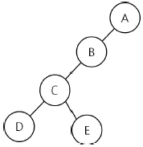
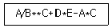
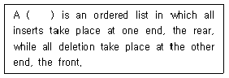
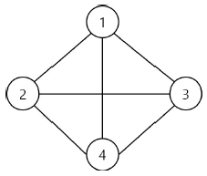
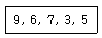
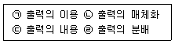
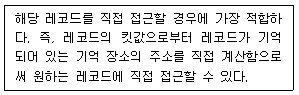
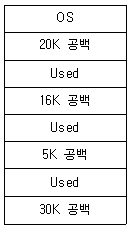
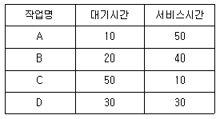
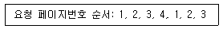

정보처리산업기사 (2019-04-27 기출문제)
1과목: 데이터 베이스
1. 릴레이션에서 튜플의 수를 의미하는 것은?
- DEGREE
- SYNONYM
- COLLISION
- CARDINALITY
(정답률: 78%)

2. 다음 트리를 Post-order로 운행할 때 노드 C는 몇 번째로 검사되는가?

- 2번째
- 3번째
- 4번째
- 5번째
(정답률: 82%)
3. 중위 표기(Infix)로 표현된 다음 산술문을 후위표기(Postfix)로 옳게 변환한 것은?

- ABC**/DE+*AC-*
- ABC**/DE*+AC*-
- **/ABC*-DE*-AC
- **/ABC+*DE-*AC
(정답률: 69%)
4. 색인 순차 파일(Indexed Sequential Access Method file)의 인덱스 구역에 해당하지 않는 것은?
- master 인덱스
- prime 인덱스
- cylinder 인덱스
- track 인덱스
(정답률: 74%)
5. 시스템 카탈로그에 대한 설명으로 옳지 않은 것은?
- 기본 테이블, 뷰, 인덱스, 데이터베이스, 접근권한 등의 정보를 저장한다.
- 시스템 카탈로그에 저장되는 내용을 메타데이터라고도 한다.
- 시스템 자신이 필요로 하는 스키마 및 여러 가지 객체에 관한 정보를 포함하고 있다.
- 시스템 테이블이므로 일반 사용자는 내용을 검색할 수 없다.
(정답률: 85%)
6. 인사 테이블의 주소 필드에 대한 데이터 타입을 VARCHAR(10)으로 정의하였으나, 필드 길이가 부족하여 20바이트로 확장하고자 한다. 이에 적합한 SQL 명령은?
- MODIFY FIELD
- MODIFY TABLE
- ALTER TABLE
- ADD TABLE
(정답률: 68%)
7. 뷰(view)에 대한 설명으로 옳은 것은?
- 셋 이상의 기본 테이블에서 유도된 실제 테이블이다.
- 시스템 내부의 물리적 표현으로 구현된다.
- 뷰 위에 또 다른 뷰를 정의할 수 없다.
- 데이터의 논리적 독립성을 제공한다.
(정답률: 63%)
8. 선형 자료구조에 해당하지 않는 것은?
- 리스트(list)
- 큐(queue)
- 데큐(deque)
- 그래프(graph)
(정답률: 83%)
9. 널(NULL) 값에 대한 설명으로 부적합한 것은?
- 부재(missing) 정보를 의미한다.
- 알려지지 않은 값을 의미한다.
- 영(zero)의 값을 의미한다.
- 널(NULL) 값은 혼란을 야기할 수 있다.
(정답률: 85%)
10. 논리적 설계 단계에 해당하지 않는 것은?
- 논리적 데이터 모델로 변환
- 트랜잭션 인터페이스 설계
- 개념 스키마의 평가 및 정재
- 접근 경로 설계
(정답률: 56%)
11. 이진탐색(Binary Search)을 하고자 할 때 구비조건으로 가장 중요한 것은?
- 자료가 순차적으로 정렬되어 있어야 한다.
- 자료의 개수가 항상 짝수이어야 한다.
- 자료의 개수가 항상 홀수이어야 한다.
- 자료가 모두 정수로만 구성되어야 한다.
(정답률: 76%)
12. 데이터베이스 설계 단계 중 개념 스키마 모델링 및 트랜잭션 모델링과 관계되는 것은?
- 개념적 설계
- 논리적 설계
- 물리적 설계
- 요구조건 분석
(정답률: 64%)
13. 다음 영문의 ( ) 안에 적합한 단어는?

- stack
- queue
- graph
- tree
(정답률: 61%)
14. A, B, C, D의 순서로 정해진 입력 자료를 스택에 입력하였다가 출력한 결과가 될 수 없는 것은? (단, 왼쪽부터 먼저 출력된 순서대로 나열하였다.)
- A, D, C, B
- A, B, C, D
- D, C, B, A
- B, D, A, C
(정답률: 71%)
15. 학생 테이블에서 학번에 300인 학생의 학년을 3으로 수정하기 위한 SQL 질의어는?
- UPDATE 학년=3 FROM 학생 WHERE 학번=300;
- UPDATE 학생 SET 학년=3 WHERE 학번=300;
- UPDATE FROM 학생 SET 학년=3 WHERE 학번=300;
- UPDATE 학년=3 SET 학생 WHEN 학번=300;
(정답률: 72%)
16. 다음과 같은 그래프에서 간선의 개수는?

- 2개
- 4개
- 6개
- 8개
(정답률: 81%)
17. 버블 정렬을 이용한 오름차순 정렬시 다음 자료에 대한 1회전 수행 결과는?

- 6, 3, 5, 7, 9
- 6, 7, 3, 5, 9
- 3, 5, 6, 7, 9
- 6, 9, 7, 3, 5
(정답률: 79%)
18. SQL의 데이터 조작문(DML)에 해당하는 것은?
- CREATE
- INSERT
- ALTER
- DROP
(정답률: 72%)
19. 확장 ER모델에서 요소 객체들을 가지고 상위 레벨의 복합 개체를 구축하는 추상화 개념은?
- 개념화
- 집단화
- 영역화
- 캡슐화
(정답률: 41%)
20. 정렬에서 최악의 상황인 경우에 수행 속도가 가장 빠른 것은?
- 퀵 정렬
- 버블 정렬
- 선택 정렬
- 힙 정렬
(정답률: 63%)
2과목: 전자 계산기 구조
21. 어떤 컴퓨터의 메모리 용량이 4K 워드이고, 워드 길이가 16비트일 때 AR(주소 레지스터)와 DR(데이터 레지스터)는 몇 비트로 구성하여야 하는가?
- AR: 4, DR: 16
- AR: 12, DR: 32
- AR: 16, DR: 65536
- AR: 12, DR: 16
(정답률: 58%)
22. 비수치 데이터에서 마스크를 이용하여 불필요한 부분을 제거하는데 사용되는 연산은?
- OR
- AND
- NOR
- EX OR
(정답률: 64%)
23. 다음 중 I/O채널(channel)에 대한 설명으로 틀린 것은?
- DMA의 확장된 개념으로 볼 수 있다.
- multiplexer 채널은 고속 입출력 장치용이고, selector 채널은 저속 입출력 장치용이다.
- I/O 장치는 제어장치를 통해 채널과 연결된다.
- I/O 채널은 CPU의 I/O 명령을 수행하지 않고 I/O 채널 내의 특수목적 처리명령을 수행한다.
(정답률: 57%)
24. 캐시 메모리에서 사용되지 않는 매핑 방법은?
- direct mapping
- database mapping
- associative mapping
- set associative mapping
(정답률: 65%)
25. 전가산기(full adder)의 합(sum)의 출력을 얻는 논리회로는?
- AND
- OR
- XOR
- NOR
(정답률: 53%)
26. 입∙출력 장치와 CPU 사이에 존재하는 속도의 차이로 발생하는 단점을 해결하기 위한 장치는?
- Console
- Channel
- Terminal
- Register
(정답률: 66%)
27. 프로그램의 진행에 대한 제어 명령에 속하지 않는 것은?
- Jump
- Load
- Branch
- Interrupt
(정답률: 49%)
28. RISC(Reduced Instruction Set Computer)형 프로세서의 특징으로 가장 옳은 것은?
- 다양한 Addressing Model를 지원한다.
- 많은 수의 명령어를 갖는다.
- 명령어의 길이가 일정하다.
- 자주 사용되지 않는 특별한 동작을 수행하는 명령어가 존재한다.
(정답률: 54%)
29. 입∙출력 인터페이스에 대한 설명으로 가장 옳은 것은?
- CPU와 입출력 장치를 기계적으로 연결한다.
- 컴퓨터에는 1개의 인터페이스가 있다.
- 주기억 장치 내에 포함된다.
- 입출력 조작 효율을 증대시키기 위한 서브시스템이다.
(정답률: 59%)
30. 인터럽트(interrupt)의 발생 원인에 해당되지 않는 것은?
- 입출력 장치의 데이터 전송 요구
- 오버플로우(overflow)의 발생
- 분기명령의 실행
- supervisor call 명령의 실행
(정답률: 50%)
31. 전자계산기의 연산장치 부호와 크기의 가산 과정에서 초과상태(overflow)가 발생할 조건으로 알맞은 것은?
- 음수에 비하여 양수가 큰 경우
- 양수에 비하여 음수가 큰 경우
- 두 수가 모두 음수이거나 양수인 경우
- 가산에서는 모든 경우에 초과상태가 발생하지 않는다.
(정답률: 58%)
32. 다음 중 가장 큰 수는?
- 2진수 1011101
- 8진수 157
- 10진수 165
- 16진수 B7
(정답률: 62%)
33. RAM(Random Access Memory)의 특징으로 가장 옳은 것은?
- 데이터 입∙출력의 고속 처리
- 데이터 입∙출력의 순서적 처리
- 데이터 입∙출력의 내용 기반 처리
- 데이터 기억공간의 확장 처리
(정답률: 64%)
34. 주소 선의 수가 11개이고 데이터 선의 수가 8개인 ROM의 내부조직을 나타내는 것은?
- 2K × 8
- 3K × 8
- 4K × 8
- 12K × 8
(정답률: 53%)
35. 10진수 –6의 2의 보수 표현으로 옳은 것은?
- 11111110
- 11111010
- 11111011
- 11111100
(정답률: 58%)
36. 한 명령의 실행 사이클 중에 인터럽트 요청에 의해 인터럽트를 처리한 후 CPU가 다음에 수행하는 사이클은?
- fetch cycle
- indirect cycle
- execute cycle
- direct cycle
(정답률: 66%)
37. 다음 중 접근 속도가 가장 빠른 것은?
- Floppy disk
- Harddisk
- Register
- Magnetic Tape
(정답률: 81%)
38. 1-주소 형식 인스트럭션에서 반드시 필요한 것은?
- 누산기
- 스택
- 승산기
- 인덱스 레지스터
(정답률: 61%)
39. 주기억장치에서 정보를 읽을 때, 읽은 정보를 기억시켜 놓는 레지스터는?
- 메모리 어드레스 레지스터
- 메모리 버퍼 레지스터
- 인덱스 레지스터
- 누산기
(정답률: 58%)
40. MOD-5 카운터를 설계하려고 할 때 필요한 최소의 플립플롭의 개수는?
- 1
- 2
- 3
- 4
(정답률: 46%)
3과목: 시스템분석설계
41. 파일 설계 단계 중 항목의 이름, 항목의 배열 순서, 항목의 자릿수, 문자의 구분, 레코드 길이의 가변성 여부, 전송 블록 길이 등을 검토하는 단계는?
- 파일 매체의 검토
- 파일 편성범위 검토
- 파일 특성 조사
- 파일 항목의 검토
(정답률: 55%)
42. 객체 지향 방법론 중에서 Rumbaugh의 OMT 방법론과 Booch의 Booch 방법론, Jacobson의 OOSE 방법론을 통합하여 만든 모델링 개념의 공통 집합으로 객체지향 분석 및 설계 방법론의 표준 지정을 목표로 제안된 모델링 언어는?
- OOD(Object Oriented Design)
- OMG(Object Management Group)
- OMT(Object Modeling Technique)
- UML(Unified Modeling Language)
(정답률: 54%)
43. 체크 시스템의 컴퓨터 처리 단계에서 데이터를 처리할 때 발생하는 에러를 체크하는 항목이 아닌 것은?
- Check Digit Check
- Double Record Check
- Sign Check
- Impossible Check
(정답률: 41%)
44. 표준 처리 패턴 중 특정 조건이 주어진 파일 중에서 그 조건에 만족되는 것과 그렇지 않은 것으로 분리 처리하는 것은?
- 갱신
- 정렬
- 대조
- 분배
(정답률: 61%)
45. HIPO 다이어그램을 구성하는 요소가 아닌 것은?
- 도형 목차
- 총괄 도표
- 자료 사진
- 상세 도표
(정답률: 70%)
46. 시스템 개발에서 가장 먼저 작업이 이루어지는 단계는?
- 조사분석
- 시스템 제작
- 시스템 운영
- 문제의 제기
(정답률: 57%)
47. 체크 시스템의 종류 중 입력된 수치가 미리 정해진 범위 내의 수치인지를 검사하는 방법은?
- format check
- numeric check
- logical check
- limit check
(정답률: 73%)
48. 출력정보의 설계 순서가 올바른 것은?

- ㉠ → ㉡ → ㉢ → ㉣
- ㉠ → ㉢ → ㉡ → ㉣
- ㉢ → ㉡ → ㉣ → ㉠
- ㉡ → ㉣ → ㉠ → ㉢
(정답률: 61%)
49. 구조적 프로그램의 기본 구조에 해당하지 않는 것은?
- 반복(repetition)구조
- 순차(sequence)구조
- 일괄(batch)구조
- 조건(condition)구조
(정답률: 48%)
50. 입력 설계 단계 중 입력 항목의 명칭, 배열, 자릿수, 자료 유형, 오류체크 방법 등을 결정하는 단계는?
- 입력 정보 내용 설계
- 입력 정보 투입 설계
- 입력 정보 매체화 설계
- 입력 정보 수집 설계
(정답률: 55%)
51. 출력장치나 특수작업으로 만들어진 매체가 이용자의 손을 경유하여 재입력되는 시스템은?
- Display Output System
- Turn Around System
- Computer Output Microfile System
- File Output System
(정답률: 77%)
52. 소프트웨어 개발주기 모델 중 폭포수형의 특징으로 옳지 않은 것은?
- 개발 과정 중에 발생하는 새로운 요구나 경험을 반영하기 용이하다.
- 단계별 정의가 분명하고, 각 단계별 산출물이 명확하다.
- 두 개 이상의 과정이 병행하여 수행되지 않는다.
- 소프트웨어 개발 과정의 앞 단계가 끝나야만 다음 단계로 넘어 갈 수 있다.
(정답률: 61%)
53. 로드화 대상 항목을 대분류, 중분류, 소분류 등으로 구분하여 각 그룹내에서 순서대로 번호를 부여하여 분류하는 코드의 종류는?
- 구분 코드(Block code)
- 10진 분류 코드(Decimal code)
- 합성 코드(Combined code)
- 그룹 분류 코드(Group classification code)
(정답률: 69%)
54. 파일매체를 선정하기 위한 기능 검토 시 검토하는 사항이 아닌 것은?
- 처리방식의 검토
- 정보량의 검토
- 항목의 명칭 및 문자구분, 배열 검토
- 파일의 개수 및 사용 빈도의 검토
(정답률: 44%)
55. 다음의 코드 설계 단계 중 가장 먼저 행하는 것은?
- 코드 대상 항목 선정
- 사용 범위와 기간의 결정
- 코드 부여 방식 결정
- 코드 목적의 명확화
(정답률: 63%)
56. 시스템의 개발과 운용에 관한 문서화(Documentation)의 목적으로 가장 옳지 않은 것은?
- 시스템 개발 후에 시스템의 유지 보수를 용이하게 한다.
- 문서화 자체로 시스템의 보안성을 강화할 수 있다.
- 시스템 개발 중 추가 변경에 따른 혼란을 방지할 수 있다.
- 시스템 개발 방법과 순서를 표준화하여 효율적인 작업과 관리가 가능하다.
(정답률: 76%)
57. 시스템의 기본 요소로 가장 거리가 먼 것은?
- 입력과 출력
- 처리
- 제어
- 상호 의존
(정답률: 76%)
58. 시스템을 평가하는 목적으로 거리가 먼 것은?
- 시스템 운영 관리의 타당성 파악
- 시스템의 성능과 유용도 판단
- 처리 비용과 효율 면에서 개선점 파악
- 시스템 운영 요원의 재훈련
(정답률: 78%)
59. 파일 편성 방법 중 다음 설명에 해당하는 것은?

- Sequential 편성
- Indexed sequential 편성
- List 편성
- Random 편성
(정답률: 40%)
60. 프로세스 설계 시 고려할 사항으로 거리가 먼 것은?
- 처리 과정을 명확히 표현하여 신뢰성과 정확성을 확보한다.
- 가급적 분류 처리를 최대화한다.
- 시스템의 상태 및 기능, 구성 요소 등을 종합적으로 표현한다.
- 신 시스템 및 기존 시스템 프로세스의 설계 문제점 분석이 가능하도록 설계한다.
(정답률: 76%)
4과목: 운영체제
61. 프로세스를 스케줄링하는 목적으로 옳지 않은 것은?
- 모든 작업에 대해 공평성을 유지해야 한다.
- 응답시간을 최소화해야 한다.
- 프로세스의 처리량을 최소화해야 한다.
- 경과시간의 예측이 가능하여야 한다.
(정답률: 63%)
62. 파일 디스크립터에 대한 설명으로 옳지 않은 것은?
- 파일 제어 블록(FCB)이라고도 한다.
- 시스템에 따라 다른 구조를 가질 수 있다.
- 파일 관리를 위해 시스템이 필요로 하는 정보를 가지고 있다.
- 파일 시스템이 관리하므로 사용자가 직접 참조할 수 있다.
(정답률: 73%)
63. 디스크 스케줄링 기법 중 가장 안쪽과 가장 바깥쪽의 실린더에 대한 차별대우를 없앤 기법은?
- FCFS
- SSTF
- N-단계 SCAN
- C-SCAN
(정답률: 55%)
64. 파일 보호 기법 중 각 파일에 판독 암호와 기록 암호를 부여하여 제한된 사용자에게만 접근을 허용하는 기법은?
- 파일의 명명(Naming)
- 비밀번호(Password)
- 접근제어(Access control)
- 암호화(Cryptography)
(정답률: 56%)
65. UNIX에서 현재 프로세스의 상태를 확인할 때 사용되는 명령어는?
- ps
- cp
- chmod
- cat
(정답률: 59%)
66. 가상기억장치를 운영하기 위한 페이지 대치 알고리즘이 아닌 것은?
- FIFO(First-In-First-Out)
- LRU(Least Recently Used)
- LFU(Least Frequently Used)
- SJF(Shortest Job First)
(정답률: 55%)
67. 시스템 소프트웨어가 아닌 것은?
- 컴파일러
- 링커
- 워드프로세서
- 로더
(정답률: 74%)
68. 15K의 작업을 16K의 작업공간에 할당했을 경우, 사용된 기억장치 배치전략 기법은?

- First-Fit
- Best-Fit
- Worst-Fit
- Last-Fit
(정답률: 74%)
69. 분산 운영체제와 네트워크 운영체제의 설명으로 옳지 않은 것은?
- 분산 운영체제는 전체 시스템에 대하여 일관성 있는 설계가 가능하다.
- 네트워크 운영체제는 기존의 운영체제 위에 통신 기능을 추가한 것이다.
- 분산된 시스템 내에 하나의 운영체제가 존재할 때 이것을 네트워크 운영체제라 한다.
- 분산 운영체제에서는 네트워크로 연결된 각 노드들의 독자적인 운영체제가 배제된다.
(정답률: 37%)
70. 세마포어(semaphore)에 대한 설명으로 가장 옳지 않은 것은?
- P조작은 프로세스를 대기시키는 wait 동작이다.
- V조작은 대기 중인 프로세스를 깨우는 신호를 보내는 signal 동작이다.
- 세마포어는 항상 양수 값을 가진다.
- 프로세스 블록 큐는 임계영역에 진입할 수 없는 프로세스를 블록화하여 대기시키는 순서를 유지하는 데 사용하는 큐이다.
(정답률: 71%)
71. PCB에 대한 설명으로 틀린 것은?
- 각각의 프로세스는 모두 PCB를 갖고 있다.
- PCB를 위한 공간은 시스템이 최대로 수용할 수 있는 프로세스의 수를 기본으로 하여 동적으로 공간을 할당하게 된다.
- 프로세스의 중요한 상태 정보를 갖고 있다.
- 프로세스가 소멸되어도 해당 PCB는 제거되지 않는다.
(정답률: 72%)
72. HRN 스케줄링 기법을 적용할 경우 우선순위가 가장 높은 것은?

- A
- B
- C
- D
(정답률: 64%)
73. 분산 운영체제에서 프로세스 P가 사이드 A에 있는 파일에 접근할 때, 프로세스가 원격 프로시져 호출(Remote Procedure Call)을 이용하여 이동하는 이주 기능은?
- 데이터 이주
- 연산 이주
- 프로세스 이주
- 사이트 이주
(정답률: 37%)
74. 자원 보호 기법 중 객체와 그 객체에 허용된 조작 리스트이며, 영역과 결합되어 있으나 사용자에 의해 간접적으로 액세스되는 기법은?
- 접근 제어 행렬(access control matrix)
- 권한 리스트(capability list)
- 접근 제어 리스트(access control list)
- 자물쇠와 열쇠(lock/key) 매커니즘
(정답률: 45%)
75. UNIX 명령어 중 파일에 대한 액세스(읽기, 쓰기, 실행) 권한을 설정하는데 사용하는 명령어는?
- chmod
- pwd
- mkdir
- Is
(정답률: 65%)
76. 교착상태(Deadlock)의 4가지 필요조건에 해당하지 않는 것은?
- 자원은 사용이 끝날 때까지 이들이 갖고 있는 프로세스로부터 제거할 수 있다.
- 프로세스가 다른 자원을 기다리면서 이들에게 이미 할당된 자원을 갖고 있다.
- 프로세스들이 그들이 필요로 하는 자원에 대해 배타적인 통제권을 요구한다.
- 프로세스의 환형 사슬이 존재해서 이를 구성하는 각 프로세스는 사슬 내의 다음에 있는 프로세스가 요구하는 하나 또는 그 이상의 자원을 갖고 있다.
(정답률: 52%)
77. 4개의 페이지를 수용할 수 있는 주기억장치가 현재 완전히 비어 있으며, 어떤 프로세스가 다음과 같은 순서로 페이지번호를 요청했을 때 페이지 대체 정책으로 FIFO를 사용한다면 페이지 부재(Page0fault)의 발생 횟수는?

- 3회
- 4회
- 5회
- 6회
(정답률: 55%)
78. 개인용 컴퓨터(PC) 운영체제가 아닌 것은?
- Adobe Photoshop
- Unix
- Windows 10
- Linux
(정답률: 76%)
79. 여러 개의 큐를 두어 낮은 단계로 내려갈수록 프로세스의 시간 할당량을 크게 하는 프로세스 스케줄링 방식은?
- MFQ(Multi-level Feedback Queue)
- SJF(Shortest Job First)
- SRT(Shortest Remaining Time)
- Round Robin
(정답률: 52%)
80. 프로세스에 대한 설명으로 틀린 것은?
- 지정된 결과를 얻기 위한 일련의 계통적 동작을 말한다.
- 목적 또는 결과에 따라 발생되는 사건들의 과정을 말한다.
- 프로세스는 프로그램 자체만으로 이루어져 있다.
- CPU에 의해 수행되는 사용자 및 시스템 프로그램을 말한다.
(정답률: 69%)
5과목: 정보통신개론
81. 필수변조에서 아날로그 정보신호의 크기에 따라 펄스 반송파의 폭을 변화시키는 변조 방식은?
- PWM
- AM
- PPM
- PCM
(정답률: 44%)
82. UDP 프로토콜에 대한 설명으로 틀린 것은?
- 비연결형 전송
- 적은 오버헤드
- 빠른 전송
- 신뢰성 있는 데이터 전송 보장
(정답률: 50%)
83. 송신측에서 1개의 프레임을 전송한 후 수신측에서 오류의 발생을 점검하여 ACK 또는 NAK 신호를 보내올 때까지 대기하는 방식은?
- 선택적 ARQ
- 적응적 ARQ
- 연속적 ARQ
- 정지&대기 ARQ
(정답률: 74%)
84. LAN의 토폴로지 형태로 적절하지 않은 것은?
- star 형
- bus 형
- ring 형
- square 형
(정답률: 74%)
85. 라우팅 프로토콜 중 Distance vector 방식이 아닌 것은?
- RIP
- BGP
- EIGRP
- OSPF
(정답률: 52%)
86. 한 문자가 전송될 때마다 스타트(start) 비트와 스톱(stop) 비트를 전송하는 방식은?
- 비트제어방식
- 동기방식
- 비동기방식
- 다중화방식
(정답률: 55%)
87. 8진 PSK 변조를 사용하는 모뎀의 데이터 전송속도가 4800bps일 때 변조속도(baud)는?
- 600
- 1600
- 2400
- 4800
(정답률: 64%)
88. 광섬유 케이블에서 클래딩(Cladding)의 주 역할은?
- 광신호를 전반사
- 광신호를 회절
- 광신호를 흡수
- 광신호를 전송
(정답률: 70%)
89. ATM 셀의 헤더 크기는 몇 [byte] 인가?
- 2
- 5
- 48
- 53
(정답률: 65%)
90. 데이터그램(datagram)방식에 대한 설명 중 맞는 것은?
- 수신지의 마지막노드에서는 송신지에서 송신한 순서대로 패킷이 도착한다.
- 모든 패킷은 설정된 경로에 따라 전송된다.
- 미리 설정된 경로상의 각 노드는 패킷에 대한 경로를 알고 있으므로 경로설정과 관련된 결정을 수행할 필요가 없다.
- 네트워크 운용에 있어서 보다 높은 유연성을 제공한다.
(정답률: 39%)
91. 무선 네트워크 기술인 블루투스(Bluetooth)에 대한 표준규격은?
- IEEE 801.9
- IEEE 802.15.1
- IEEE 802.10
- IEEE 809.5.1
(정답률: 54%)
92. HDLC에서 사용되는 프레임의 종류에 해당하지 않는 것은?
- 정보 프레임
- 감독 프레임
- 무번호 프레임
- 제어 프레임
(정답률: 31%)
93. 반송파로 사용되는 정현파의 진폭에 정보를 싣는 변조 방식은?
- ASK
- FSK
- PSK
- WDPCM
(정답률: 48%)
94. 패킷 교환 방식에 대한 설명으로 틀린 것은?
- 메시지 교환 방식과 같이 축적 교환 방식의 일종이다.
- 트래픽 용량이 적은 경우에 유리하다.
- 전송할 수 있는 패킷의 길이가 제한되어 있다.
- 데이터그램과 가상회선방식이 있다.
(정답률: 41%)
95. HDLC 프레임 구조에 포함되지 않는 것은?
- 플래그(Flag) 필드
- 제어(Control) 필드
- 주소(Address) 필드
- 시작(Start) 필드
(정답률: 69%)
96. 아날로그 데이터를 디지털 신호로 변환하는 PCM 방식의 진행 순서로 옳은 것은?
- 표본화 → 부호화 → 양자화 → 여과 → 복호화
- 표본화 → 양자화 → 부호화 → 복호화 → 여과
- 표본화 → 부호화 → 양자화 → 복호화 → 여과
- 표본화 → 양자화 → 여과 → 부호화 → 복호화
(정답률: 72%)
97. 8진 PSK에서 반송파 간의 위상차는?
- π
- π/2
- π/4
- π/8
(정답률: 48%)
98. 변조속도가 1600(Baud)이고 트리비트(Tribit)를 사용하는 경우 전송속도(bps)는?
- 800
- 1600
- 4800
- 12800
(정답률: 75%)
99. 점대점 링크를 통하여 인터넷 접속에 사용되는 IEFT의 표준 프로토콜은?
- HDLC
- LLC
- SLIP
- PPP
(정답률: 55%)
100. 전송하려는 부호어들의 최소 해밍 거리가 7일 때, 수신시 정정할 수있는 최대 오류의 수는?
- 1
- 2
- 3
- 4
(정답률: 54%)